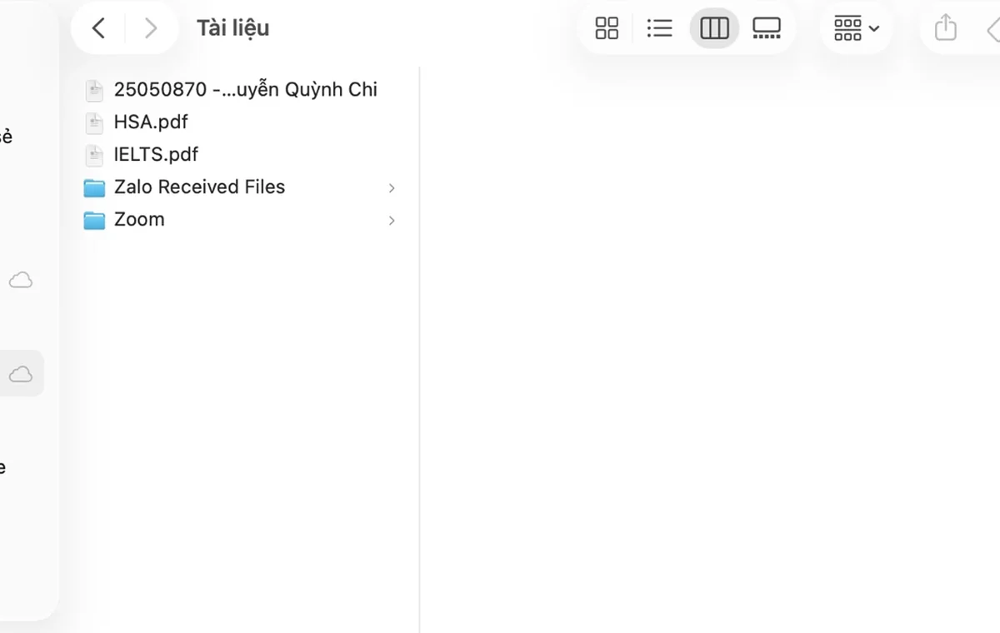
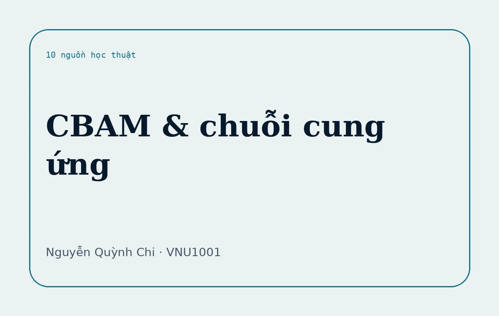
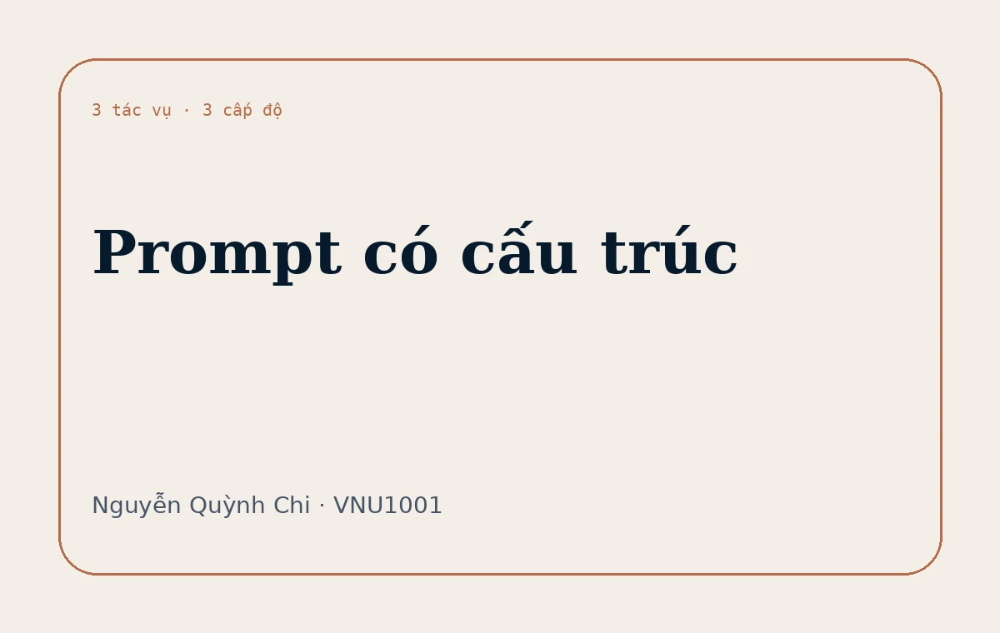
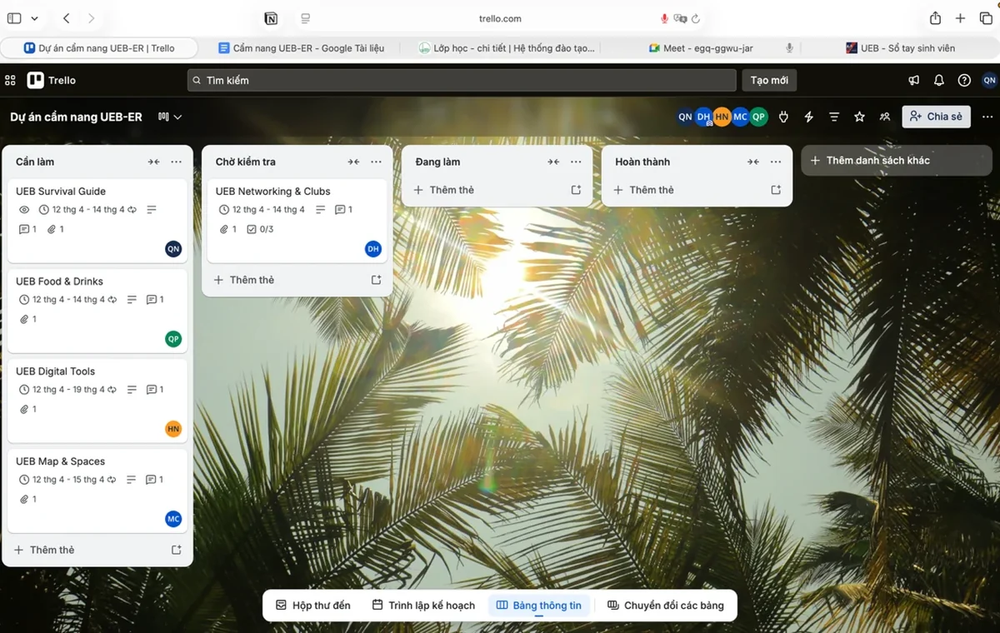
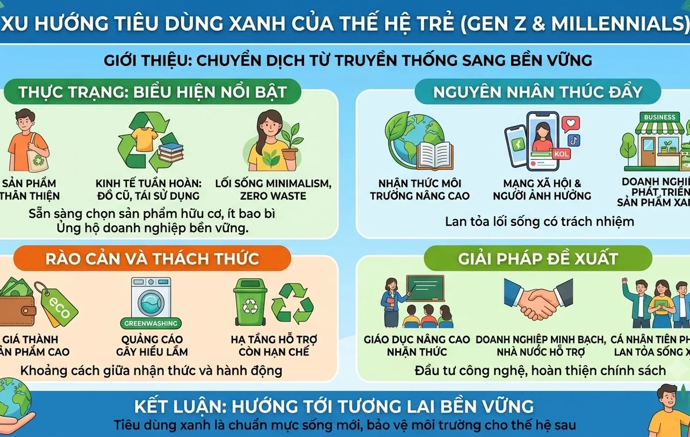
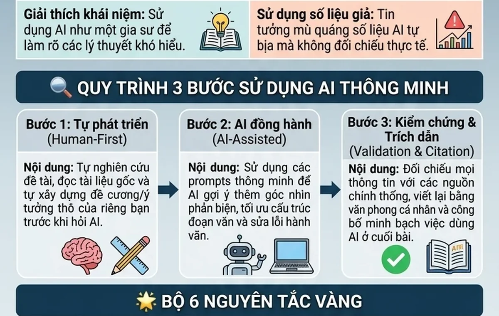

Sáu hồ sơ học tập và một tín hiệu giữa kỳ.
Mỗi bài có một URL riêng, nội dung được dựng lại thành web, bảng thành HTML và ảnh minh chứng được đặt đúng ngữ cảnh. Bài giữa kỳ được xếp như một bonus project thay vì đứng rời khỏi hệ thống.

01Thao tác cơ bản với tệp tin và thư mục
Tổ chức dữ liệu cá nhân qua 12 thao tác tạo, đổi tên, sao chép, di chuyển, xóa và khôi phục tệp.

02Tìm kiếm và đánh giá thông tin học thuật
Mười nguồn về CBAM và chuỗi cung ứng xuất khẩu Việt Nam, được xếp hạng theo tiêu chí học thuật.

03Viết prompt hiệu quả cho tác vụ học tập
So sánh prompt cơ bản, cải tiến và nâng cao cho ba tình huống học tập.

04Sử dụng công cụ hợp tác trực tuyến
Dự án nhóm “Cẩm nang dành cho UEBers” với Trello, Docs, Drive, Meet và Zalo.

05AI tạo sinh hỗ trợ sáng tạo nội dung
Quy trình bài viết và infographic về tiêu dùng xanh bằng ChatGPT, Firefly và Gemini.

06Sử dụng AI có trách nhiệm
Từ chính sách, biên tập đầu ra đến bộ nguyên tắc cá nhân về liêm chính học thuật.
 MIDTERM / BONUS
MIDTERM / BONUSỨng dụng AI trong học ngoại ngữ và giáo dục
Nguyễn Quỳnh Chi phụ trách quay và dựng phim. Bản web sử dụng video 720p đã tăng nét nhẹ.